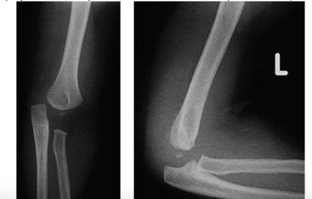
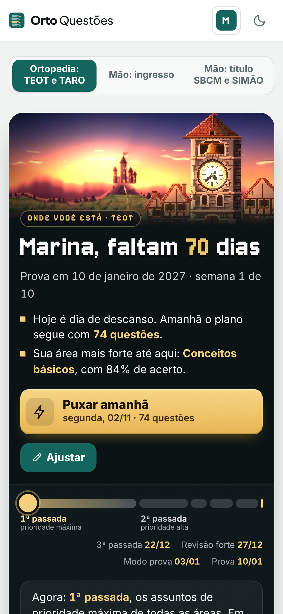

Chegou no PS: 12 meses, cotovelo esquerdo inchado e não mexe o braço. O responsável não sabe se caiu. Sem febre. Pronação dolorosa? Já faço a manobra?03:07
Olha o perfil: quem saiu do lugar?03:12

Questão de prova todo dia, com cronograma.03:16
Crie sua conta grátis agora mesmo e conheça outras questões.